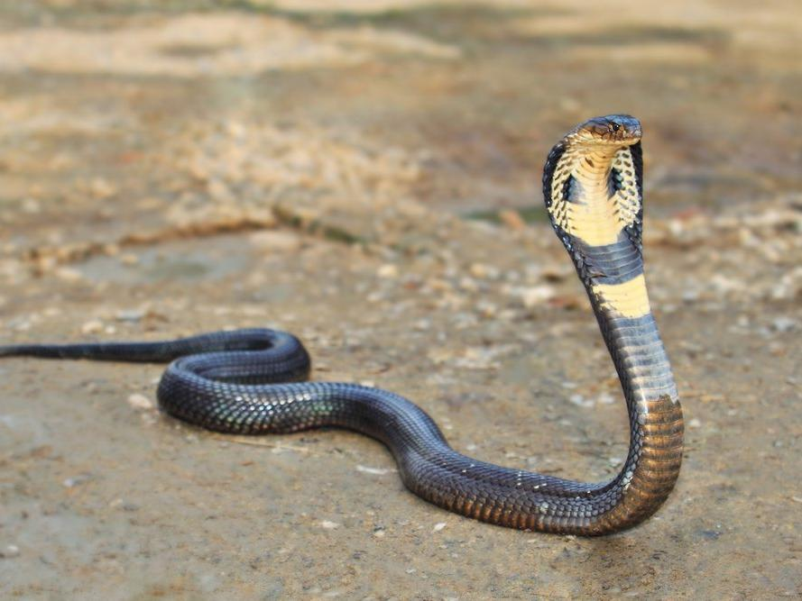

Kobra yılanı, Asya ve Afrika’nın tropikal bölgelerinde yaşayan, zehirli ve dikkat çekici bir yılan türüdür; tehdit edildiğinde başını kaldırıp boyun derisini genişleterek karakteristik “kapüşon” görünümünü alır ve bu davranış hem avcılarını korkutmak hem de kendini olduğundan büyük göstermek için geliştirdiği savunma mekanizmasıdır. Ortalama 1,5–3 metre uzunluğa ulaşabilen kobralar arasında en bilinen türler Hint kobrası, Filipin kobrası ve dünyanın en uzun zehirli yılanı olan Kral kobra’dır. Güçlü nörotoksin içeren zehirleri avlarını felç ederek etkisiz hale getirir ve ekosistem dengesinde zararlı kemirgen popülasyonunu kontrol ederek önemli bir rol oynar. Ancak habitat kaybı ve yasa dışı avlanma nedeniyle bazı kobra türleri nesli tükenme tehlikesiyle karşı karşıyadır.